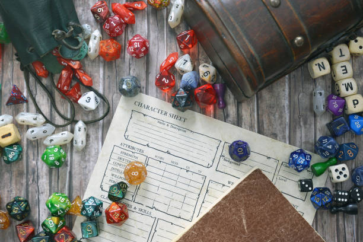

THING 1
MUAY THAI/MARTIAL ARTS

Muay Thai is a predominantly striking martial art with some clinch grappling that originated in thailand and is know as the art of eight limbs due to the fact that it utilizes four different main types of strikes you can do with both the left and right arm and leg.
- punches (hands)
- elbow strikes (elbows)
- knee strikes (knees)
- kicks (shins)
THING 2
NATURE/ANIMAL CONSERVATION

I assume we all try our best to keep our living spaces clean as much as we can. If we allow things at home to get too dirty it can get hard to breathe, smell bad, and even make it uninhabitable. The same is true for the earth as a whole. Since the industrial revolution there has been a trackable increase in greenhouse gasses leading to a changing climate that has lead to changes in weather patterns that are noticable within our own lifetime. Ice caps are melting, sea levels are rising and whole chunks of land with structures on them are literally falling into the ocean.Not to mention the flora and fauna that have been directly affected or wiped out. It is our job as the first species on earth to gain sentience and the ability to drastically affect our environment to be the stewards of the planet and care for and learn as much as we can about it or there will actually be nothing left to care about.
THING 3
TABLETOP RPGS
I like many others have always loved video games. The worlds and ways in which you can interact with them make it so easy to be able to become enchanted by gaming. however, you cqn only code so mqny options into a game. Tabletop RPGS on the other hand, can allow you complete freedom to do whatever you want. The only limits in things like DnD or Cyberpunk Tabletop or most other tabletop rpgs would be whatever is on your character sheet along with whatever rules the game master is applying to the session. No need to worry about game mechanics.